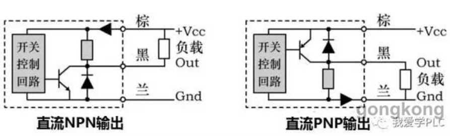

极限短路分断能力lcu的意义是：当断路器分断小于极限短路 分断能力的电流时，断路器分断后可以继续使用，但若分断 大于极限短路分断能力的电流时，分断后断路器就损坏了， 必须更换。 断路器能代替熔断器吗 中国人喜欢用断路器来对线路进行保护，因为线 路故障断路器跳闸，只要把断路器重新合闸又可以使 用了，比较方便。西方发达国家喜欢用熔断器对线路 进行保护，因为熔断器比较可靠，缺点是线路故障 后，需要换熔丝才能继续使用。 但是也不是什么场合都可以替换，也看保护对象 是什么响应速度快肯定还是熔断器。线路保护要求 不高可以替换。 电气控制回路为什么不用断路器，只用熔断器 安装空间的需求。控制回路有时几十上百个点挤 在一起； 控制回路的工作电流（功率），通常远远小于线 路承受能力，用熔断器足够保护。如：1平方的线 （够走5A以上电流），配1A的熔断器，实际工作 电流几十毫安的情况很常见。 很多控制回路可能产生的过载功率，不足以驱动断路器。 在当今的工作生产中，无论是工业还是民用的配电系 统中，都存在着一个现象，那就是低压熔断器的使用 频率越来越少，越来越多的情况下似乎大家都更加愿 意使用低压断路器来替代。而且这也不是单一现象， 在很多配电箱中，低压断路器器也正在逐步取代熔断 器。 原因大致如下： 熔断器是一次性使用的。一旦熔断器熔丝烧断就得重 新更换熔丝，相对增加了维护成本。 而断路器是可重复多次使用的，而空开动作后，只要 故障排除，再将空开投入即可，应用维护起来较方 便！ 1、 熔断器与断路器保护方式的区别：熔断器的保 护方式是采用了熔断形式，而当排除了故障现象之后 是需要重新对它更换熔体才可以恢复供电，因此来讲 在维护时比较不太方便。断路器的保护方式是采用了 跳闸形式，在排除故障以后只需要通过合闸动作就能 恢复正常供电，所以在维护和恢复上来讲会比熔断器 方便许多。 2、 熔断器与断路器动作速度的区别：熔断器的熔 断动作速度是可以达到微秒(ps)等级，也就是说它 的速度相比较断路器来讲要快上很多，这种能力通常 比较适用于有类似快速截断要求的场合下进行安装使 用。断路器的跳闸动作速度是毫秒(ms)等级，由此 可以看出要比熔断器慢上不少，所以只能够适用于对 截断速度要求并不是很高的场合下进行使用。 3、 熔断器与断路器使用次数的区别：熔断器在执 行过一次故障保护之后且熔体已熔断的情况下是必须 要重新更换才行，相反断路器绝大多数的情况下都是 可以再次重复使用的。但是总的来讲断路起到的效果 熔断器会比断路器强一些同时更彻底，一般情况下断 路器是被安装到分路线路上，而熔断器多数情况下是 被安装到总路上起到二级保护的作用。 熔断器在前而断路器在后 1）当短路电流流过熔断器时，熔断器能够在5毫秒的时间内 '熔断。对比断路器，断路器的短路保护开断时间不小于25毫 因此，熔断器的热稳定性高于断路器的热稳定性。熔断器没 有触头，它不存在动稳定性，断路器存在动稳定性。 2）熔断器具有限流特性，能快速地切断较高的短路电流。 对比之下，普通断路器能够承受的冲击短路电流较小，且承 3）当电路中同时配置熔断器与断路器时，熔断器的作用就 是保护断路器，以实现提前开断短路电流。我们这种作用叫 做后备保护。 后备保护的主动元件，它的位置必须在前，否则失去后备保 护的意义。 所以，当熔断器与断路器共存时，熔断器在前而断路器在后
终端继电器内部由双向可控硅及其触发电路构成， 一般继电器由线圈和触头组成．双向可控硅功能相当于触头，触发电路功能相当于线圈．终端继电器优点是由于是无 触点开关，所以适合于粉尘和工作频率高的场所，无电弧
SolidState Relay，SSR
广泛应用于计算机外围接口装置，电炉加热恒温系 统，数控机械，遥控系统、工业自动化装置；
信号灯、闪烁器、照明舞台灯光控制系统；
仪器仪表、医 疗器械、复印机、自动洗衣机；
自动消防，保安系 统，以及作为电网功率因素补偿的电力电容的切换开关等等
另外在化工、煤矿等需防爆、防潮、防腐蚀 场合中都有大量使用。
交流固态继电器按开关方式分有电压过零导通型（简称过零型）和随机导通型（简称随机型）；
过零型SSR与随机型SSR的区别当输入端施加有 效的控制信号时，随机型SSR输出端立即导通（速度 为微秒级），而过零型SSR则要等到负载电压过零区域（约士1 5V)时才开启导通。
当输入端撤消控制信号 后，过零型和随机型SSR均在小于维持电流时关断。
虽然过零型SSR有可能造成最大半个周期的延时，但 却减少了对负载的冲击和产生的射频干扰，成为理想 的开关器件，在“单刀单掷”的开关场合中应用最为广泛。
随机型SSR的特点是反应速度快，它可以控制移相触发脉冲达到方便地改变交流电网电压，从而应用于精确地调温、调光等阻性负载及部分感性负载场合
按输出开关元件分有双向可 控硅输出型（普通型）和单向可控硅反并联型（增强 型）；
按安装方式分有印刷线路板上用的针插式（自 然冷却，不必带散热器）和固定在金属底板上的装置 式（靠散热器冷却）；另外输入端又有宽范围输入(Dc3-32v）的恒流源型和串电阻限流型等。
三相固态继电器与三只单相固态继电器选择三相固态继电器均为过零型，即三相SSR 只能作“开关”，不能作“调压”。实际上三相ssR是把三个单相SSR做在一起，并用一个输入端控制。对实际 负载电流不大的场合，三相SSR使用起来比较方便， 但电流大时发热亦大，这时使用三只单相SSR更为可靠（因三只单独分开比集中在一起散热效果好，控制 方法：三个输入端可串联或并联），另外如负载短路 造成SSR损坏，三只单相SSR（一般损失一到二只）比一只三相SS R的损失要小。
固态继电器电流等级的选取及过流保护过流 （最严重的情况为负载短路）是造成ssR内部输出可控硅永久性损坏的最主要原因。
快速熔断器和空气开 关是过流保护方法之一，小容量SSR也可选用保险丝；
许多负载在接通瞬间会产生很大的浪涌电流，由 于散热不及，浪涌电流与过流一样也是造成SSR内部输出可控硅损坏的最主要原因之一。
因此选取固态继 电器时，保证一定的电流余量是极其重要的。
负载10A及以上，必须安装散热器，40A以上加风扇强冷或水冷。
感性负载时，选用规格应大于电机启动电流，且在输出端并接压敏 电阻，取值为负载电压的1.6-1.9倍。
阻性负载时，选取SS R的电流等级宜大于等于 2倍的负载额定电流。
交流电磁铁、中间继电器线保、电感线圈等负 载时，选取SSR的电流等级宜大于等于4倍的负载额定电流。
变压器时要求大于等于5倍变压器初级额定电 流，特种感性、容性负载则应根据实际经验还须放大 SSR的电流余量。
电力补偿电容器类负载时，选取SSR的电流等 级须大于5倍的负载额定电流。
除SSR内部本身有PC吸收回路保护外，还可以采取并联金属氧化物压敏电阻,MOV面积大小决定吸收功率，MOV的厚度决定保护电压值。
一般 220V系列SSR可选取500 V-600V的压敏电阻，380V系列SSR可选取800V-900V的压敏电阻，480V系列SSR 可选取10 OUV-110 Dv的压敏电阻。
压敏电阻电压值选取太小，容易 造成经常烧毁压敏电阻而短路（但SSR不损坏）；电 压值选取太大，又起不到保护SSR的目的，故应用本公司SSR，如采用压敏电阻，请尽量选定在上述范围内。
由于SSR内部的可控硅在负载短 路时的过流烧毁速度与快速熔断器的熔断速度在同一 数量级内，故快速熔断器并不能百分之一百地保护 SSR。
选取快速熔断器的电流等级的原则为略大于最 大负载电流，而固态继电器的电流等级则尽可能大，这样快熔就能比较可靠地保护SSR。
电动机、电力补 偿电容器类负载因有很大的开启冲击电流，故宜选取 空气开关作保护。
空气开关分“慢速”和“快速”两类：‘慢 速”类主要应用于如电动机、电力电容器等有很大启动 冲击电流的负载；空气开关的保护速度低于快熔，因此在负载短路时也不能百分之一百地保护SSR
固态继电器SSR适用于50Hz或60Hz的工频电网上，不宜于低频或高次谐波分量大的场合，如变频器输出端有多组负载需要分别切换，采用ssR作为开关则可能由于高次谐波使其不能可靠关断，并且高次谐波还可能使SSR内部的RC吸收回路因过热而炸裂。
常见的接近开关截面越粗检测距离越远。根据检测物体的不同，接近开关分为电感性和电容性两种，电感性接近开关是利用霍尔效应，检测磁场的变化，由于金属才能引起磁场的变化，因此电感性接近开关主要检测金属主要是钢铁。电容性接近开关实质是一个电容的极板，当被检测物体接近时，整个电容的介电常数发生变化，于是就认为有物体接近，因此，电容性接近开关即可以检测金属，也可以检测非金属，但是一般我们都是用电感性接近开关检测金属，因此，大家都默认电容性接近开关用于检测非金属。比如陶瓷，纸张，木材等。
两线制接近开关受工作条件的限制，导通时开关本身产生一定压降，截止时又有一定的剩余电流流过，选用时应予考虑。三线制接近开关虽多了一根线，但不受剩余电流之类不利因素的困扰，工作更为可靠。两线的回路中必须带它允许电流的负载后方可接入电源上，否则烧坏。
源型高电平有效，漏型低电平有效。
三菱plc输入是源型还是漏型，取决于S/S端子连接的是0V还是24V。如果S/S端子连接的是0V，那么输入是源型。如果S/S端子连接的是24V，那么输入是漏型。

npn的输出接到中间继电器的线圈，线圈的另一端接24v+，然后在中间继电器的常开点一端接24V+，另一端接Plc的输入即可。
音叉式液位开关是一种新型的液位开关。音叉由晶体激励产生振动，当音叉被液体浸没时振动频率发生变化，这个频率变化由电子线路检测出来并输出一个开关量。音叉式液位开关又被称作“电气浮子“凡使用浮球液位开关和由于结构、湍流、搅动、气泡、振动等原因导致不能使用浮球液位开关的场合均可使用“电气浮子”。由于音叉液位开关无活动部件，因此无须维护和调整，是浮球液位开关的升级换代产品。
音叉液位开关的工作原理是通过安装在音叉基座上的一对压电晶体使音叉在一定共振频率下振动。当音叉液位开关的音叉与被测介质相接触时，音叉的频率和振幅将改变，音叉液位开关的这些变化由智能电路来进行检测，处理并将之转换为一个开关信号。
音叉开关的技术优势：音叉开关几乎适用于所有的液体介质，音叉开关不受泡沫、涡流、气体的影响。同时也适用于测量能自由流动的中等密度的固体粉末或颗粒。
它是以水位变化中引起的电容量的差值变化为依据进行控制。虽然这种差值的变化是微小的，但是由专门的仪器可以准确的识别。电容式的水位开关有一个很大的好处就是它可以再有介质阻隔的情况下依然可以检测到水位的变化，这样一来就大大增强了它的实际应用。同时也提高了水位监测的稳定性和可靠性，电容式的水位检测可以说是目前水位检测方法中最好的一个。
1.磁翻柱液位显示器/液位计
2.电缆式浮球液位开关
3.超声波/雷达液位计
4.压力式液位计
5.浮球连续式液位计
6.静电容式液位计
7.连杆式浮球液位开关
8.射频导纳式液位开关
9.侧装式浮球开关
10.水流开关
11.光电式液位开关
12.压力式液位变送器
13.小型浮球液位开关
一般地，磁性材料具有一个临界温度Tc，在这个温度以上，由于高温下原子的剧烈热运动，原子磁矩的排列是混乱无序的。在此温度以下，原子磁矩排列整齐，产生自发磁化，物体变成铁磁性的。如果是是温度过高，则会导致浮子或翻柱内的磁力消磁。对于用户来说购买产品的时候需要向仪表制造厂家提供明确的介质温度，来确定选用使用的高温浮子。
我们知道磁翻板液位计是磁铁的磁性是由于物体内部的一部分微小回路因为某种原因（比如长期将无磁性的铁块放在不变的磁场中）得到一定的排列，在一个方向上的总磁场强度大于其他方向，所以表现出磁性。高温会使磁铁内部分子运动加剧，打乱内部分子排列，就会使磁铁失去磁性，这是居里夫人发现的，所以把磁铁的高温退磁点叫做该磁铁的居里温度。这个退磁点在磁翻板制作和使用过程中是一个非常重要的概念，因为退磁点的存在，所以对于所有的磁性材料来说，磁性并不是永远都会存在的，它跟温度有密切的关联。
1，热电阻和热电偶的工作原理
热电偶工作原理是基于赛贝克效应．即两种不同热点特性的导体两端连接成回路，如两连接端温度不同，贝Ii在回路内产生热电势的物理现象。它由两根不同导线（热电极）组成，它们的一端是互相焊接的，形成热电偶的测量端（也称工作端）。将它插入待测温度的介 质中；而热电偶的另一端（参比端或自由端）则与显示仪表相连。如果热电偶的测量端与参比端存在温度差，则显示仪表将指出热电偶产生的热电动势。
热电阻是利用金属导体或半导体有温度变化时本身电阻也随着发生变化的特性来测量温度的，热电阻的受热部分（感温元件）是用细金属丝均匀地绕在绝缘材料作成的骨架上或通过激光溅射工艺在基片形成。当被测介质有温度梯度时，则所测得的温度是感温元件所在范围内介质层的平均温度。
2，如何选择热电偶和热电阻
根据测温范围选择：500度以上一般选择热电偶，500度以下一般选择热电阻；
根据测量精度选择：对精度要求较高选择热电阻，对精度要求不高选择热电偶； 根据测量范围选择：热电偶所测量的一般指’‘点”温，热电阻所测量的一般指空间平均温度。
长距离使用热电偶补偿导线，因信号衰减和干扰引入测量误差，热电偶测温时产生的电势值为mV信号，因补偿导线用长度增加出现信号衰减和现场磁电干扰耦合，使仪表或DCS系统温度显示值波动。
处理方法：
A、需要长距离敷设补偿导线，补偿导线线径应不低于Φ1.5mm2，减少mV信号衰减。
B、选用屏蔽型补偿导线，并将屏蔽层按规范接地（必须让屏蔽层在补偿导线一端接地，接地并入仪表信号接地网，禁止将接地并入工厂电气接地网），避免因屏蔽层接地不正确而引入测量误差。
C、使用温度变送器，将就地热电偶信号转换为4-20mA信号传输，提高信号抗干扰能力。
热电偶选配热电偶温度变送器后，无需补偿导线
热电偶温度变送器通常安装在热电偶接线盒内和控制柜内，这是两种不同结构的温度变送器：
A、温度变送器安装在热电偶接线盒内构成一体化热电偶温度变送器，热电偶偶丝直接接到温度变送器输入端上，输出为两线制4-20mA信号，变送器与显示仪表或DCS系统直接用双绞线或两芯屏蔽电缆连接，不使用热电偶补偿导线。
B、如果温度变送器安装在控制柜内，热电偶与温度变送器之间连接必须使用补偿导线，变送器与显示仪表或DCS系统直接用双绞线或两芯屏蔽电缆连接，不使用热电偶补偿导线。